.jpg) 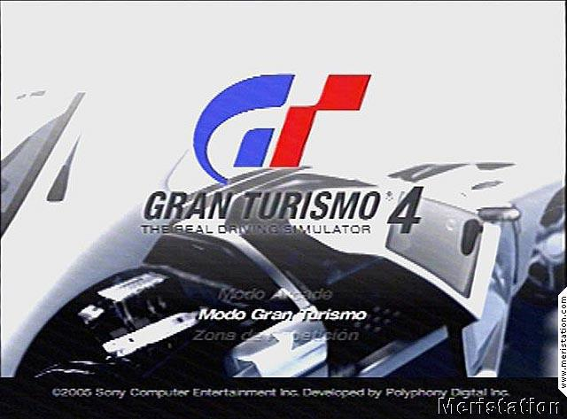
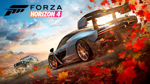
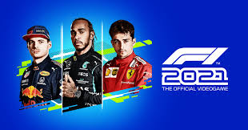
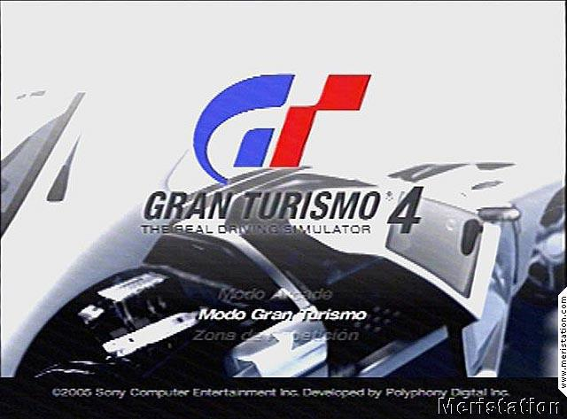
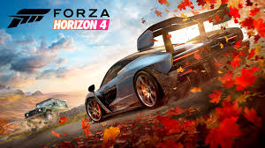
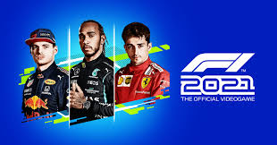
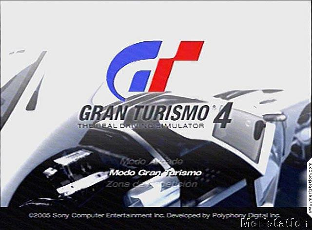
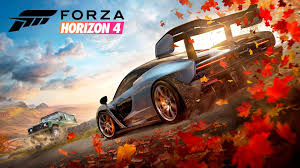
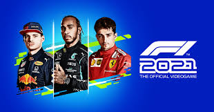
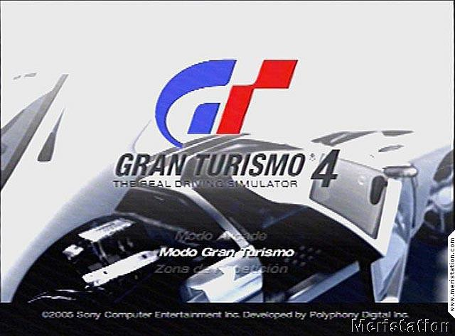
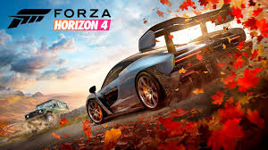
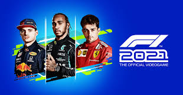
Los juegos de carreras en PC han evolucionado significativamente desde el año 2000 hasta 2024, pasando de gráficos sencillos y físicas básicas a simulaciones detalladas con gráficos realistas y física compleja. Este género abarca una amplia variedad de estilos, desde simuladores realistas hasta juegos de carreras arcade y de mundo abierto. A lo largo de los años, los juegos de carreras han incorporado mejoras en la inteligencia artificial, modos multijugador, y sistemas de personalización avanzados que permiten a los jugadores ajustar vehículos a su gusto.
Desde el año 2000, los juegos de carreras han avanzado en realismo y complejidad, con el desarrollo de nuevas tecnologías como el ray tracing para gráficos más realistas, inteligencia artificial más sofisticada, y soporte para realidad virtual (VR), que ha llevado la inmersión a nuevos niveles. Los simuladores se han vuelto más precisos, mientras que los juegos arcade han mejorado en términos de experiencia de usuario y accesibilidad, expandiendo el público de los juegos de carreras en PC.
La serie Need for Speed comenzó en 1994 con un enfoque en carreras de
autos exóticos y simulación realista. En los años 2000, se destacó con
juegos como Underground y Most Wanted, introduciendo el tuning y
persecuciones policiales en mundos abiertos.
La franquicia experimentó con diferentes estilos, desde simulaciones más
realistas como Shift, hasta regresos a la fórmula arcade con Hot Pursuit y
Rivals. Tras críticas a títulos como Payback, NFS: Heat (2019) mejoró la
recepción con un regreso a las carreras callejeras y personalización.
NFS: Unbound (2022) es el título más reciente, destacando por su estilo
visual único con efectos artísticos y animaciones innovadoras.